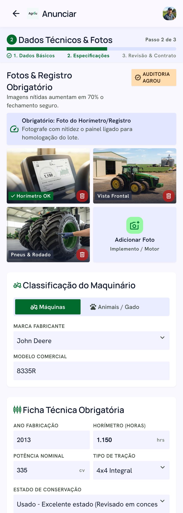
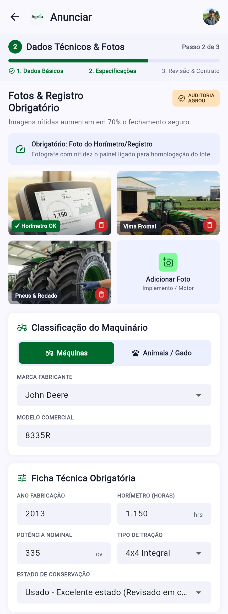
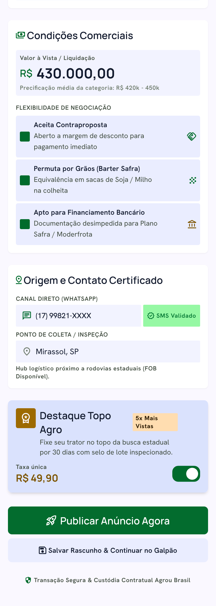
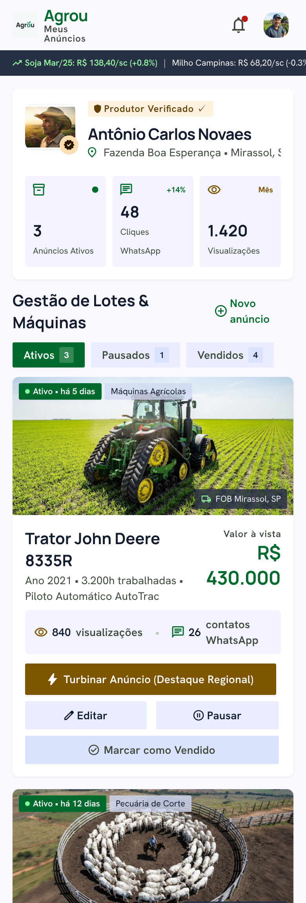
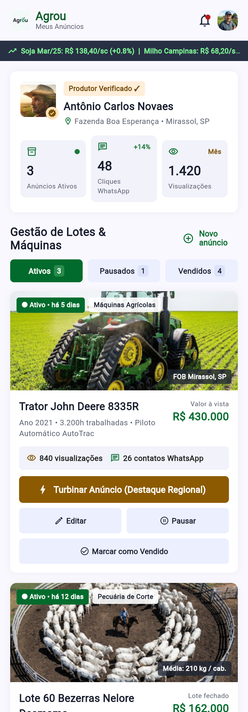

specs/ e testes):




Todos os testes foram executados de ponta a ponta no app Flutter (test/fluxo_mvp_test.dart e validação visual lado a lado com o Figma). O teste que falhou na primeira execução mantém o status Falhou nesta tabela e tem sua correção e reteste registrados na seção 4.
| ID | Teste | Passos | Esperado | Obtido | Status |
|---|---|---|---|---|---|
| T1 | Caminho principal: publicar anúncio, abrir detalhes e ver no Início | 1. Na tela Início (badge Anúncios = 3), tocar em + Anunciar.2. Em Anunciar, alterar Modelo Comercial para 8400R e Valor à Vista para 510.000,00.3. Tocar em Publicar Anúncio Agora. 4. No Painel, tocar no card publicado para abrir Detalhes Do Lote. 5. Voltar ao Painel e tocar em Início. |
Abre Painel – Meus Anúncios com Anúncios Ativos = 4, aba Ativos [4] e card Trator John Deere 8400R com R$ 510.000. Ao abrir detalhes, mostra título Trator John Deere 8400R e preço R$ 510.000. Ao voltar para Início, o novo card aparece em Oportunidades do Dia. |
Abriu Meus Anúncios com KPI 4, aba Ativos 4, card Trator John Deere 8400R (R$ 510.000). Detalhes exibiu Trator John Deere 8400R e R$ 510.000. No retorno ao Início, o card Trator John Deere 8400R apareceu no topo das oportunidades. |
Passou |
| T2 | Caminho alternativo: voltar no meio sem publicar | 1. Em Início, tocar em + Anunciar. 2. Alterar Modelo Comercial para 9999X.3. Tocar na seta Voltar no cabeçalho sem tocar em Publicar. |
Fecha Anunciar e retorna para Início (Negocie direto no campo sem intermediários). Nenhum anúncio Trator John Deere 9999X é criado e o badge de ativos permanece em 3. |
Retornou para Início sem criar anúncio. O texto Trator John Deere 9999X não apareceu na lista nem no Painel, e o contador permaneceu em 3. |
Passou |
| T3 | Caminho alternativo: deixar campos obrigatórios vazios | 1. Em Início, tocar em + Anunciar. 2. Apagar os campos Modelo Comercial e Valor à Vista / Liquidação. 3. Tocar em Publicar Anúncio Agora. |
Permanece na tela Anunciar, exibe as mensagens Informe o modelo comercial e Informe um valor válido maior que zero e mantém Anúncios Ativos = 3. |
Permaneceu em Anunciar, exibiu os erros de validação nos campos vazios e o aviso Preencha os campos obrigatórios antes de publicar; contador seguiu em 3. |
Passou |
| T4 | Caminho alternativo: editar anúncio no Painel e alterar valor | 1. Em Início, tocar na aba Anúncios. 2. No card Trator John Deere 8335R (R$ 430.000), tocar em Editar.3. Alterar o valor para 415.000,00 e tocar em Salvar Alterações. |
Abre Editar Anúncio preenchido com 8335R e 430.000,00; após salvar, volta para Painel – Meus Anúncios exibindo R$ 415.000 no card, mantendo Anúncios Ativos = 3. |
Abriu Editar Anúncio com os dados do lote; após salvar, retornou ao Painel mostrando R$ 415.000 no card Trator John Deere 8335R e KPI 3 ativos (sem duplicar). |
Passou |
| T5 | Gestão completa no Painel: pausar, reativar e excluir | 1. Abrir Painel (Ativos 3, Pausados 1).2. Tocar em Pausar no card Lote 60 Bezerras Nelore Desmama.3. Abrir aba Pausados e tocar em Reativar Anúncio em Grade Aradora Baldan 28 Discos.4. Voltar à aba Ativos e tocar em Excluir na Grade Aradora Baldan 28 Discos. |
Após pausar: Ativos 2, Pausados 2. Após reativar a grade: Ativos 3, Pausados 1. Após excluir a grade: Ativos 2 e o card Grade Aradora Baldan 28 Discos desaparece da lista. |
Contadores mudaram exatamente de 3/1 → 2/2 → 3/1 → 2/1, e o card Grade Aradora Baldan 28 Discos foi removido após o toque em Excluir. |
Passou |
| T6 | Caminho alternativo: toque duplo rápido em Publicar | 1. Em Início, tocar em + Anunciar. 2. Alterar Modelo Comercial para 7230J.3. Tocar duas vezes seguidas rapidamente em Publicar Anúncio Agora. |
Abre apenas uma tela Painel com Anúncios Ativos = 4 (não 5) e apenas um card Trator John Deere 7230J. |
A trava anti-duplo-toque (_enviando) bloqueou o segundo envio: abriu 1 tela Painel, exibiu Anúncios Ativos = 4 e apenas 1 card Trator John Deere 7230J. |
Passou |
| T7 | Salvar rascunho no galpão e layout em largura estreita (320 px) | 1. Abrir o app em largura 320 px.2. Tocar em + Anunciar, digitar modelo 6150J.3. Tocar em Salvar Rascunho & Continuar no Galpão. |
Sem erro de layout/overflow em 320 px; abre Painel direto na aba Pausados com contador 2 e card Trator John Deere 6150J. |
Salvou o rascunho em Pausados [2] com Trator John Deere 6150J, porém o Flutter reportou exceção de layout na grade de fotos de Anunciar: A RenderFlex overflowed by 14 pixels on the bottom. |
Falhou |
| ID do teste | O que foi corrigido | Reteste |
|---|---|---|
| T7 | Na tela Anunciar (lib/screens/anunciar_page.dart), a grade 2×2 de fotos usava childAspectRatio: 1.48, o que reduzia a altura do cartão Adicionar Foto abaixo do necessário em telas de 320 px e gerava RenderFlex overflowed by 14 pixels on the bottom. Substituímos por altura fixa mainAxisExtent: 122 e envolvemos o conteúdo interno do cartão em FittedBox(fit: BoxFit.scaleDown) com padding: 8. Todos os 26 testes do projeto (widget_test.dart + fluxo_mvp_test.dart) foram reexecutados e passaram sem exceções. |
Passou |